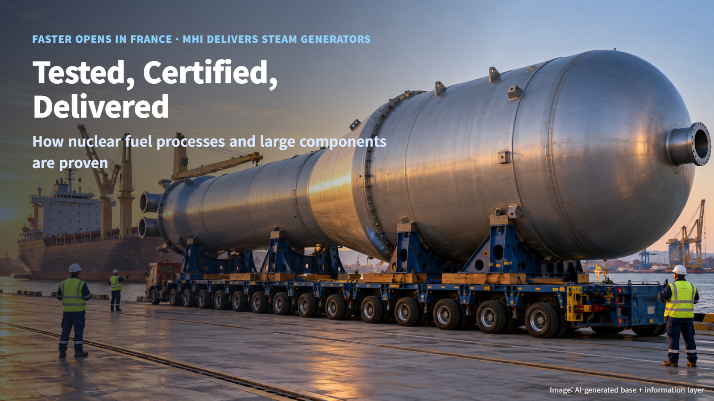
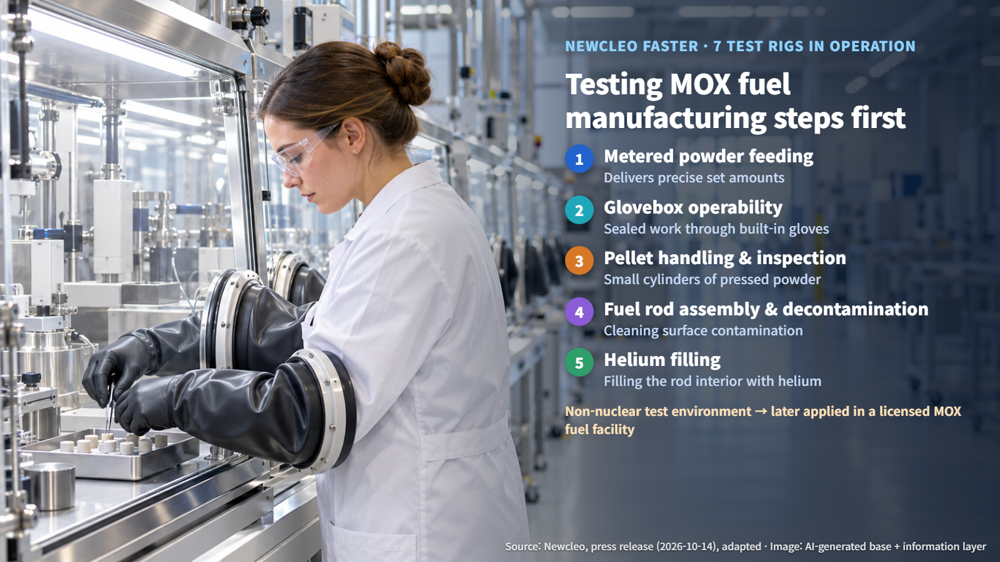
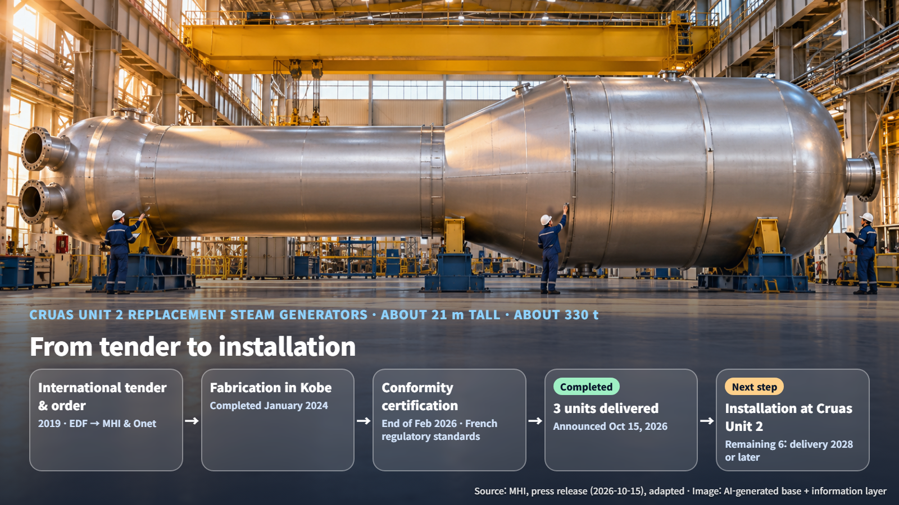

France · Fuel and Component Verification
Tested, Certified, Delivered: How Nuclear Fuel Processes and Large Components Are Proven Before They Reach a Plant
Newcleo's new FASTER test center and MHI's steam generator delivery for Cruas Unit 2 show the steps fuel and hardware pass before entering a plant.
What happens to nuclear fuel and plant equipment before they arrive on site? A power plant's buildings are easy to see, but the work of preparing the fuel and the hardware that go inside them gets far less attention. This week brought two pieces of news from the French nuclear sector that help answer the question. One is the opening of a center that tests a fuel manufacturing process ahead of time; the other is the delivery of large components built in Japan, certified, and shipped to a French nuclear plant. Following both cases shows the verification steps that come before anything enters service.

Testing the Process First: The FASTER Center
Newcleo announced that on October 14, 2026, it opened the FASTER fuel engineering, testing and training center in Chusclan, in southern France. The company invested about €10 million in the center, which supports the development of a fuel workforce of about 100 specialists.
The fuel the center is preparing for is mixed oxide (MOX) fuel, a nuclear fuel made by blending oxides of uranium and plutonium. Located near the Marcoule nuclear site, the center develops and tests technologies, manufacturing processes and equipment in a non-nuclear test environment. The processes and equipment refined there are planned to be applied later in a licensed MOX fuel facility.
Seven test rigs are currently in operation. Each one takes on a specific manufacturing task: metered powder feeding, which delivers powder in precisely set amounts; glovebox operability, where a glovebox is a sealed enclosure with gloves built into its walls so workers can reach in and handle material from outside; handling and inspection of fuel pellets, the small cylinders made by pressing powder; fuel rod assembly and decontamination, which means cleaning contamination off surfaces; and helium filling, in which the inside of the fuel rod is filled with helium gas. Picture a worker with hands inside the glovebox gloves, handling a test pellet.

Newcleo plans to turn design concepts into prototypes and test mock-ups, test them under representative conditions, and feed the results back into the design, repeating that cycle. The goal of this iteration is to raise the reliability of the process and its readiness for industrial use.
The Long Journey of a 21 m Steam Generator: From Tender to Delivery
The second piece of news concerns large components. Mitsubishi Heavy Industries (MHI) announced on October 15, 2026, that it had completed delivery of three replacement steam generators for EDF's Cruas Unit 2 in France. Cruas Unit 2 is a 900MWe-class pressurized water reactor, and the supply is part of an equipment replacement project.
A steam generator transfers heat from the primary system, which is heated by the reactor, to the secondary system, producing the steam that drives the turbine. Each unit is about 21 m tall and weighs about 330 t, a giant cylinder roughly as tall as a seven-story apartment building. Inside its low-alloy steel pressure vessel are about 4,500 heat-transfer tubes made of corrosion-resistant TT690 alloy. These are slender tubes through which the hot primary water flows, passing its heat to the secondary water outside them.
The journey of these components began in 2019. After an international tender that year, EDF placed the order with MHI and its French partner Onet Technologies, and fabrication was completed at MHI's Kobe works in Japan in January 2024.
Verification Steps: Testing, Certification and Installation
Before the finished steam generators could leave Kobe for France, a certification step lay ahead. At the end of February 2026, the components obtained certification of conformity with the standards required by the French nuclear regulator, and they were then shipped to France.
The fuel side has its own regulatory path. Newcleo's actual MOX manufacturing plant, separate from FASTER, is proposed near Nogent-sur-Seine in the Aube region. The company explained that it will reflect the opinion on its safety options issued in July by France's Nuclear Safety and Radiation Protection Authority (ASNR) in its future construction license application and in its pre-application engagement in the United States. A safety options review is a procedure in which a company obtains the regulator's views on the broad direction of its safety design before filing a full license application.
Put the two cases side by side and the verification before entering service rises like a staircase:
- Process testing: test equipment and processes as prototypes in a non-nuclear test environment and improve them iteratively (FASTER)
- Regulatory review: reflect the regulator's opinion on safety options in the construction license application (MOX manufacturing plant)
- Fabrication and certification: fabricate in the factory, then certify conformity with the importing country's regulatory standards (steam generators)
- Transport and installation: deliver to the site, then install in the plant (Cruas Unit 2)
Next Milestones: A Construction License Application and Installation at Cruas Unit 2
Newcleo's next tasks are to build up test results from each FASTER rig and feed them into the commercial process design, and to move forward with the construction license application for its French MOX manufacturing plant and its pre-application engagement in the United States. The specific filing date has not been disclosed yet.
For MHI, the next step is installing the three delivered units at Cruas Unit 2. MHI secured a total of nine replacement steam generators under this order; the remaining six are being fabricated in Kobe and are scheduled for delivery in 2028 or later.

Before a handful of fuel or a single component enters a power plant, it passes in turn through test halls, factories and regulatory review. The next time a nuclear news story says "opened," "certified" or "delivered," consider which step of that long verification staircase it describes. The same news will read with far more depth.